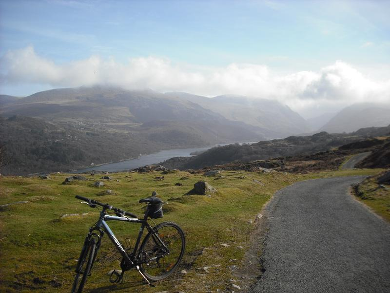
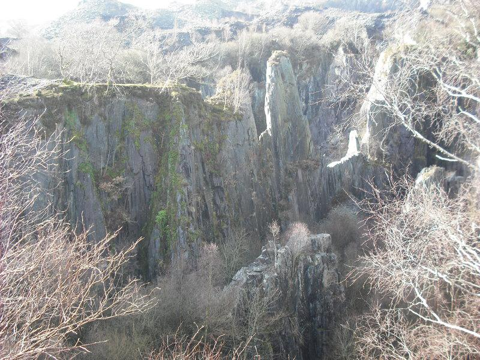
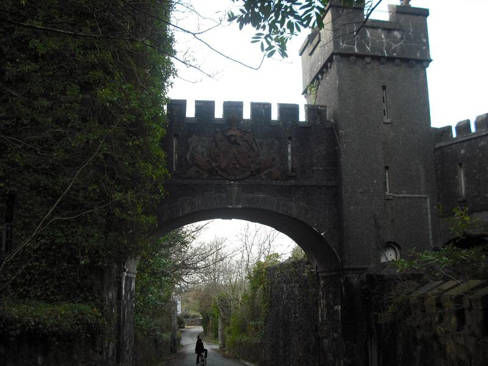
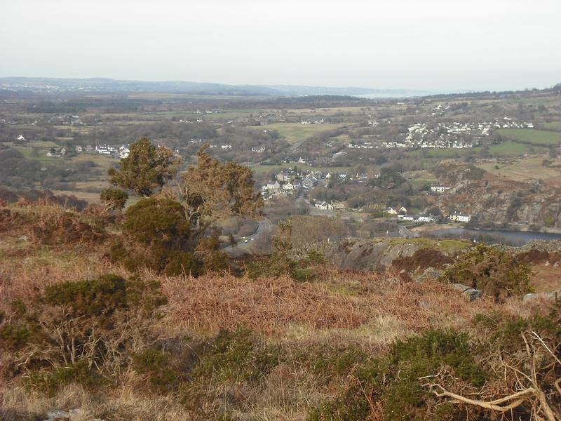

Llanberis.Circuit
I found this ride in "BikeFax - The best mountain bike trails in Snowdonia". It's probably the easiest ride in the book, but well worth doing. It's all on tracks or minor roads and is suitable for all but very young children. You don't need a "Mountain Bike" for this route, a road bike will be fine.
- Time around 1.5 hours.
- Distance 10.5km.
- Ascent 225m.
Llyn Padarn and the Glyders
{kind=link}
Note to see more photographs from the walk click here You could start the ride in several places. We have started from the Caban at Brynrefail and from the lake at Llanberis. However, the parking at Llanberis is Pay and Display, whereas the parking near to the Caban is free.
From the Caban cycle over the bridge and turn left following the Lon Las Peris route. You will have to lift your bikes over the first gate on the old road. When the track meets the main road, pay close attention to the signs. You need to go along the footpath a hundred yards or so in the direction of Caernarfon and then cross the road, where the track continues back in the direction of Llanberis. Soon after crossing the road you pass through a short tunnel. You don't need lights, but it can be quite dark so take care when cycling.
Initial steep hill

Note to see more photographs from the walk click here The path follows the shore of Llyn Padarn to emerge at the large car park by the main road. Cross the road at the far end of the car park and go past (or into) Pete's Eats. The route continues up Goodman Street opposite to Pete's Eats. The steepest section of the ride is just in front, but it's short lived. There is quite a lot more uphill, but nothing really steep.
Slate Quarry
{kind=link}
Note to see more photographs from the walk click here Make sure that you stop by the quarries and look through the fence into their depths. As you continue to climb the views open out. Snowdon and the Glyders behind and the coast and Anglesey in front. The high point is Pen Y Bwlch and you now begine the steep descent towards Bryn Bas Castle. Care is needed here because you may meet cars coming uphill around the blind bends.
Bryn Bas Castle
{kind=link}
When you reach the castle you pass under an arch formed by the castle walls and shortly after turn right. There is a short uphill section before the final steep descent, via a couple of hairpins, into Cwm y Glo. At the junction turn right and continue until you reach the junction with the main road.
View West from Pen Y Bwlch
{kind=link}
Cross the road, turning right towards Llanberis. After a short distance take the first turn left. This looks like the entrance to an industrial estate at first glance. Tun right and follow a track which emerges on the main road opposite to the bridge to Brynrefail. Cross the main road and continue back to the Caban for well earned refreshments.